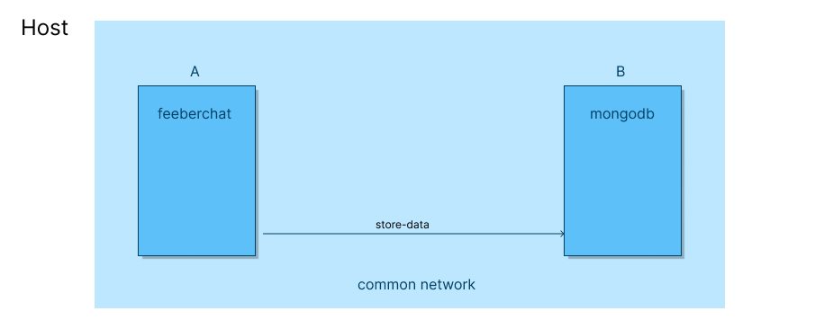
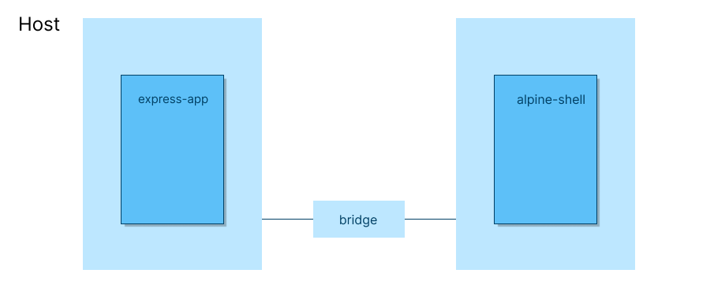

Hello folks! Good to see you again on our journey of Docker. In this post, we would be learning about docker networking. So, let’s get started.
What is covered?
- Abstract
- Problem Statement
- How does Docker Network solve the problem?
- Simple example
- Types of networks based on drivers
- Diving deep into
bridgenetworks - Conclusion
Abstract
Docker has been a powerful tool for creating and managing independent applications and services. These services are interacting with each other through specified interfaces. However, the isolated environment of docker stymies that interaction. An isolated environment hinders services request-response communications as they have different network namespaces.
To solve this problem, docker introduced the concept of networking. Docker Networking.
Problem without networking
Applications are running in their containers. These containers have their networking interfaces, namespace, etc. They are not aware of other containers. If there is an application that wants to communicate with another application, sends a request to a specified endpoint of another application. The request never reaches another application as networks are different and isolated.
For example, consider a chat application feeberchat (I created this app a long time ago 😄). feeberchat is running inside a container A. The database of feeberchat is getting stored in an instance of mongodb running inside another container B.
As both A and B have different network namespaces, they can’t communicate.

How does Docker Networking solve the problem?
Docker networking allows to create isolated networks for containers to communicate with each other. It creates a common networking namespace where containers reside and communicate.

An example
Assume we have a node (express) application running on port 3000, dockerized with endpoints:
//health
Running that application in no network using
⟩ docker run -d --name express-app --network none bitphile/express-app (base)Let’s try to access it from another container.
⟩ docker run -it --rm --name alpine-shell alpine:latest sh (base)It opens up the container. Now we have to send a request to container express-app. What is the endpoint? We don’t know as express-app is running without any network. Docker didn’t assign any IP address to express-app container.
Now, let’s run express-app again differently
⟩ docker run -d --name express-app bitphile/express-app (base)Inspecting network details of express-app gives
{
"bridge": {
"IPAMConfig": null,
"Links": null,
"Aliases": null,
"NetworkID": "8f7326c66c80c45501e24eb7c29596b9a1065624a81b443ef34f8e5c59abab05",
"EndpointID": "987f33191fc7843190ac74227c8d062b6a8e2b9c2101e52e289f2f82e6f8c9af",
"Gateway": "172.17.0.1",
"IPAddress": "172.17.0.3",
"IPPrefixLen": 16,
"IPv6Gateway": "",
"GlobalIPv6Address": "",
"GlobalIPv6PrefixLen": 0,
"MacAddress": "02:42:ac:11:00:03",
"DriverOpts": null
}
}It bombarded us with a bunch of details. Let’s not worry about the rest of the details and take IPAddress into consideration. IPAdderss is the IP address of container express-app in the default bridge network (coming in the following sections. Just assume it is as a networking type).
Let’s send a request to this ip address from alpine-shell container.
$ curl 172.17.0.3:3000/health
This is healthy $Great! We got some results.
What did happen?
When we run express-app container without specifying --network flag, it creates a virtual network (which is called default bridge network). Docker assigns an ip address from that virtual network to the container. That’s why we could see IPAddress in docker inspect.
If you try running express-app with --network none flag and inspect the container, you wouldn’t be seeing any network information.

Network drivers
Docker provides various network drivers for different types of requirements. Following is a list of those drivers.
- bridge
- host
- overlay
- macvlan
- ipvlan
Each of these drivers has different capabilities. Select a driver best suits your requirements. For the sake of simplicity and the size of the post, we would be going with bridge network driver.
Bridge Networks
Aligning ourselves with the name, we can think of a bridge as something that connects segments. In networking, it is a Link Layer device that connects network segments.
In docker, bridge networks connect containers in a network where they can communicate easily while allowing isolation from the rest of the containers not connected to the same bridge network.
Bridge networks can only be used on the same docker daemon host. For networking among containers from different docker hosts, prefer some other docker networking driver (eg overlay network).
Default Bridge Network
Docker creates this network by default if we don’t specify any network to use.
⟩ docker network ls (base)
NETWORK ID NAME DRIVER SCOPE
8f7326c66c80 bridge bridge local
1b69478406e4 host host local
9324e36db9ab none null localLook bridge network of the driver bridge. This is the default bridge network created and managed by docker. Though we can also configure it but not doing also suffices the requirements in most cases.
Note: Have a look at
nonenetwork withnulldriver. This is what we have used for no networking.
User-defined Bridge Network
We can also create a network of driver bridge. This has a few advantages over default bridge network:
- The most important, user-defined bridge network provides automatic DNS resolution between containers. It means, we can directly use container names to send requests instead of IP addresses.
- User has total control over the configurations on the network.
- Only containers with this network type can communicate.
Using user-defined Bridge Network
Creating a network
Following is the command used to create a docker network
docker network create [options] <name>Let’s create a network of the name bitphile.
⟩ docker network create bitphile (base)
2bfb26180adc42445ca0127f8628d45b71f1871b8b3fdea2a7d3da8b31e9dd17
⟩ docker network ls (base)
NETWORK ID NAME DRIVER SCOPE
2bfb26180adc bitphile bridge local
8f7326c66c80 bridge bridge local
1b69478406e4 host host local
9324e36db9ab none null localBy default, it creates a network of driver type bridge. We can specify the driver using --driver flag.
⟩ docker network create --driver macvlan bitphile (base)
237a35cfa290dd59db70b099cf970efd5efbd29f150ae65c7add51632d704a81Inspecting the network details gives us
[
{
"Name": "bitphile",
"Id": "2bfb26180adc42445ca0127f8628d45b71f1871b8b3fdea2a7d3da8b31e9dd17",
"Created": "2023-03-19T09:42:37.48139717Z",
"Scope": "local",
"Driver": "bridge",
"EnableIPv6": false,
"IPAM": {
"Driver": "default",
"Options": {},
"Config": [
{
"Subnet": "172.20.0.0/16",
"Gateway": "172.20.0.1"
}
]
},
"Internal": false,
"Attachable": false,
"Ingress": false,
"ConfigFrom": {
"Network": ""
},
"ConfigOnly": false,
"Containers": {},
"Options": {},
"Labels": {}
}
]Running the container with this network
⟩ docker run -d --name express-app --network bitphile bitphile/express-app
70ae390032cbf2e1e38e749895cf17533c70021168a457480a3dd57f035296feIf we inspect the network bitphile again, we would see a list of containers using this network.
[
{
"Name": "bitphile",
"Id": "56b7da97479a3a27859e2c62b5a9f84b8389b5b3d5b41b40283b56a40e88d1a6",
"Created": "2023-03-19T09:46:13.74404902Z",
"Scope": "local",
"Driver": "bridge",
"EnableIPv6": false,
"IPAM": {
"Driver": "default",
"Options": {},
"Config": [
{
"Subnet": "172.22.0.0/16",
"Gateway": "172.22.0.1"
}
]
},
"Internal": false,
"Attachable": false,
"Ingress": false,
"ConfigFrom": {
"Network": ""
},
"ConfigOnly": false,
"Containers": {
"70ae390032cbf2e1e38e749895cf17533c70021168a457480a3dd57f035296fe": {
"Name": "express-app",
"EndpointID": "0fda9ef2aa92e5966320c330776986c9cea15210354d2994e3060522619a5290",
"MacAddress": "02:42:ac:16:00:02",
"IPv4Address": "172.22.0.2/16",
"IPv6Address": ""
}
},
"Options": {},
"Labels": {}
}
]Quick introduction to subnet and gateway
This won’t be thorough. It would just be for understanding networking in the context of docker.
Subnet
It is used to divide the larger network into the smaller network to make network management easy. For example, subnet 172.22.0.0/16 means the first 16 bites will be used for networks, and the rest of 16 bits will be used for hosts in the sub-network.
172 22 0 0
------- ----
network hostIn the context of docker, the subnet makes sure that the network interface has a unique IP address (gateway IP address) and the containers are assigned unique IP addresses. It also helps in routing traffic.
Gateway
As the name suggests, it is the entry point (and exit point) of a network segment.
In the context of docker, we have gateway 172.22.0.1 which is an entry point for network bitphile.
Specifying subnet and gateway
It is possible to provide a subnet and gateway while creating a network.
⟩ docker network create --subnet=172.20.0.0/16 --gateway=172.20.0.1 bitphile (base)
340e9f5c82185940df2a3a2009e6ef5276c1c6b440a9a8dc5376c5c5df448b90Try running the same command again and see what happens.
You can’t create another network with the subnet already used.
Delete a network
Deleting something gives such a relaxation that can’t be expressed. Specially deleting the code (don’t delete a working code 😂).
We can delete the network using
⟩ docker network rm bitphile (base)
bitphileConclusion
Finally, we are at the home stretch of this post. Hope you found this useful and you got something important out of this. Please reach out to me if you have any feedback. I have given my mail below. See you at the next junction of our journey on docker.
Until then,